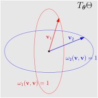

The oft repeated mantra goes as follows; “Gradient descent
takes a step in the direction of steepest descent,” with which
nothing is wrong, but needs to be put under the microscope.
For a loss function \(\ell : \Theta \to
\mathbb{R}\), and a step size \(\alpha > 0\), the update algorithm
is \[\label{eq:gradient_descent}
\mathbf{\boldsymbol{\theta}} \leftarrow
\mathbf{\boldsymbol{\theta}} - \alpha \nabla
\ell(\mathbf{\boldsymbol{\theta}}).\] The intuitive picture
is that we stand on a hilly landscape during an thick morning fog
and want to go downhill. We can only sense the immediate steepness
and take a step downhill along the negative gradient direction.
The first—rather obvious—point is that \(\nabla
\ell(\mathbf{\boldsymbol{\theta}})\) is local information on
the loss landscape at \(\mathbf{\boldsymbol{\theta}}\). Not as
localized as the simple value \(\ell(\mathbf{\boldsymbol{\theta}})\)
though. No, it contains more information about the loss landscape in
the the vicinity of \(\mathbf{\boldsymbol{\theta}}\); but
absent some further uniformity constraints on \(\ell\), no information about even the
smallest neighborhood \(U \ni
\mathbf{\boldsymbol{\theta}}\) can be gleaned. In other
words—in full generality—there is nothing stopping \(\ell(\mathbf{\boldsymbol{\theta}} +
\mathbf{\boldsymbol{\epsilon}}_0)\) from taking all kinds of
crazy values for any fixed \(\mathbf{\boldsymbol{\epsilon}}_0\) no
matter how well behaved or how gargantuan \(\nabla
\ell(\mathbf{\boldsymbol{\theta}})\) is or no matter how
small a perturbation \(\mathbf{\boldsymbol{\epsilon}}_0\)
is.
The knowledge we have is infinitesimal, meaning it only pertains
to the tangent directions \(\mathbf{\boldsymbol{v}} \in
T_{\mathbf{\boldsymbol{\theta}}}\Theta\), i.e. we only know
about the directional derivatives.
Thus, the second point to ponder reveals itself. The question
which “the gradient!” answers to is not a problem about the
function \(\ell\) on the manifold
\(\Theta\), nor is it a question
about \(\ell\) only at the point
\(\mathbf{\boldsymbol{\theta}}\).
It is on the tangent space, it has to be. Thus reverse engineering
the problem to which [eq:gradient_descent] is an
answer to, we arrive at finding the direction of steepest descent of
the linearization of \(\ell\) at \(\mathbf{\boldsymbol{\theta}}\), \[\begin{aligned}
L:& T_{\mathbf{\boldsymbol{\theta}}}\Theta
\rightarrow \mathbb{R}\\
&\mathbf{\boldsymbol{v}} \mapsto
\ell(\mathbf{\boldsymbol{\theta}}) + \nabla
\ell(\mathbf{\boldsymbol{\theta}})^\top \mathbf{\boldsymbol{v}}.
\end{aligned}\] This is a function of vectors \(\mathbf{\boldsymbol{v}} \in
T_{\mathbf{\boldsymbol{\theta}}}\Theta\) in the tangent
space, and among these vectors we will search.
Third point is hidden in the the superlatives
steepest/fastest, indicating an optimization problem and
extrema are in play. We should compare the rate of change of this
linearized function \(L\) in
various directions, but rate of change according to what!? We need a
notion of unit distance if we are to compare the change in
\(L\) when a unit distance has been
traversed. Riemannian metrics give precisely that, i.e. lengths of
vectors on tangent spaces. In fact they give a bit more, a
Riemannian metric means there is a bilinear form for every tangent
space of a manifold \[\begin{aligned}
\omega_{\mathbf{\boldsymbol{\theta}}} :&
T_{\mathbf{\boldsymbol{\theta}}}\Theta \times
T_{\mathbf{\boldsymbol{\theta}}}\Theta \to \mathbb{R}.\\
& (\mathbf{\boldsymbol{v}}, \mathbf{\boldsymbol{w}})
\mapsto
\omega_{\mathbf{\boldsymbol{\theta}}}(\mathbf{\boldsymbol{v}},
\mathbf{\boldsymbol{w}})
\end{aligned}\] which should be thought of as an inner
product.12
giving us lengths of vectors \(\|\mathbf{\boldsymbol{v}}\|_{\mathbf{\boldsymbol{\theta}}}^2:=
\omega_{\mathbf{\boldsymbol{\theta}}}(\mathbf{\boldsymbol{v}},
\mathbf{\boldsymbol{v}})\) and cosines of angles between two
vectors.
Different metrics gives different steepest descent directions.
Indeed, if going north, less distance is traveled for metric number
\(1\) versus for metric number
\(2\), but vice versa going east;
then this fact is bound to effect the direction for which \(L(\mathbf{\boldsymbol{v}})\) loses
value the most.
The metric (in the a chosen basis3\(\{\mathbf{\boldsymbol{e}}_i\}_i\)) can
be written as \(\omega_{\mathbf{\boldsymbol{\theta}}}(\mathbf{\boldsymbol{v}},
\mathbf{\boldsymbol{w}}) = \mathbf{\boldsymbol{v}}^\top
F_{\mathbf{\boldsymbol{\theta}}} \mathbf{\boldsymbol{w}}\)
where the \(ij\)-th entry of the
matrix \(F_{\mathbf{\boldsymbol{\theta}}}\) is
given by \(\omega_{\mathbf{\boldsymbol{\theta}}}(\mathbf{\boldsymbol{e}}_i,
\mathbf{\boldsymbol{e}}_j)\). Riemannian metrics are
symmetric and positive definite, and so too is the matrix \(\mathbf{\boldsymbol{F}}_{\mathbf{\boldsymbol{\theta}}}\).
The Euclidean metric corresponds to the identity matrix. For a
manifold, choosing a different local chart, and using the Identity
matrix for both will result in different directions as we see in
examples below.
We therefore solve the constrained optimization problem \[\begin{aligned}
\label{eq:constrainedOptimization}
\text{minimize } \qquad & L(\mathbf{\boldsymbol{v}}) \notag
\\
\text{subject to } \qquad &
\|\mathbf{\boldsymbol{v}}\|_{\mathbf{\boldsymbol{\theta}}}^2 = 1.
\end{aligned}\] In coordinates, the Lagrangian can be written
as \[\mathcal{L}(\mathbf{\boldsymbol{v}},
\beta) = L(\mathbf{\boldsymbol{v}}) +
\beta(\|\mathbf{\boldsymbol{v}}\|_{\mathbf{\boldsymbol{\theta}}}^2 -
1) = \ell(\mathbf{\boldsymbol{\theta}}) + \nabla
\ell(\mathbf{\boldsymbol{\theta}})^\top \mathbf{\boldsymbol{v}} +
\beta \mathbf{\boldsymbol{v}}^\top F_{\mathbf{\boldsymbol{\theta}}}
\mathbf{\boldsymbol{v}} - \beta\] and solving for \(\frac{\partial \mathcal{L}}{\partial
\mathbf{\boldsymbol{v}}} = \mathbf{\boldsymbol{0}}\), \(\frac{\partial \mathcal{L}}{\partial \beta} =
0\), we get \[\nabla\ell(\mathbf{\boldsymbol{\theta}}) + 2
\beta F_\mathbf{\boldsymbol{\theta}} \mathbf{\boldsymbol{v}} =
0\] so that the steepest descent direction \(\mathbf{\boldsymbol{v}}\) is aligned
with \(F_{\mathbf{\boldsymbol{\theta}}}^{-1}\nabla
\ell(\mathbf{\boldsymbol{\theta}})\).
Therefore the gradient update rule with respect to the metric
\(\omega_{\mathbf{\boldsymbol{\theta}}}\)
which in local coordinates is written by \(F_{\mathbf{\boldsymbol{\theta}}}\), is
given as \[\label{eq:riemannianGD}
\mathbf{\boldsymbol{\theta}}^{\text{updated}} =
\mathbf{\boldsymbol{\theta}} - \alpha
F_{\mathbf{\boldsymbol{\theta}}}^{-1} \nabla
\ell(\mathbf{\boldsymbol{\theta}}),\] or if the manifold
doesn’t allow for retractions as identity (see this
older post) then \[\label{eq:riemannianGDretraction}
\mathbf{\boldsymbol{\theta}}^{\text{updated}} =
r_{\mathbf{\boldsymbol{\theta}}}(- \alpha
F_{\mathbf{\boldsymbol{\theta}}}^{-1}\nabla
\ell(\mathbf{\boldsymbol{\theta}}))\] for a retraction \(r_{\mathbf{\boldsymbol{\theta}}} :
T_{\mathbf{\boldsymbol{\theta}}}\Theta \to \Theta\).
Different metrics will lead to different directions of
steepest descent. For example if \(\nabla\ell(\mathbf{\boldsymbol{\theta}}) =
\begin{bmatrix}
1 & 1
\end{bmatrix}^\top\) and the two metrics we have are given by
matrices \[F_{\mathbf{\boldsymbol{\theta}},1} =
\begin{bmatrix}
2& 0\\ 0&1
\end{bmatrix}
\quad \text{ and } \quad
F_{\mathbf{\boldsymbol{\theta}},2} = \begin{bmatrix}
1&0\\0&2
\end{bmatrix}\] the directions of fastest ascent will be
\(\mathbf{\boldsymbol{v}}_1 =
\begin{bmatrix}
\tfrac{1}{2} & 1
\end{bmatrix}^\top\) and \(\mathbf{\boldsymbol{v}}_2 = \begin{bmatrix}
1& \tfrac12
\end{bmatrix}^\top\).

Steepest descent directions with respect to different
metrics. Intuitively it makes sense, in order to have the most value
change in the linear function, it makes sense to go the more and
whichever direction will allow you to go more without having your
vector become too large will have an advantage. So the directions of
steepest descent will differ among different metrics.
Preconditioning the gradient with a matrix corresponds to
choosing a different than Euclidean metric in your gradient
update.
The math doesn’t require that the metric \(F_{\mathbf{\boldsymbol{\theta}}}\) be
positive definite, only nondegenerate. So, even though it is harder
to interpret, we can optimize in vector spaces with spacetime and
timelike (\(\omega_{\mathbf{\boldsymbol{\theta}}}(\mathbf{\boldsymbol{v}},
\mathbf{\boldsymbol{v}}) <0\)) vectors. The update rule [eq:riemannianGD] is the answer
now may be an answer for directions of shallowest descent see here.
Newton’s method takes \(F_{\mathbf{\boldsymbol{\theta}}} = \nabla^2
\ell(\mathbf{\boldsymbol{\theta}})\), i.e. the metric on the
tangent vectors is given by the Hessian of the loss function at that
point. However in this case, convexity is required for the Hessian
to be positive definite at every point.
Other notions of size can be used in the vector space \(T_\mathbf{\boldsymbol{\theta}}
\Theta\). One such choice is called an \(\ell^p\) norm (or \(L^p\) norm for functions) where \(\|\mathbf{\boldsymbol{v}}\|_{p} =
\left(\sum_{i = 1}^P |v_i|^p\right)^{1/p}\) where \(p \geq 1\) and then the
optimal
Bilinear functions can also be viewed as linear
functions from the tensor product \(\omega_{\mathbf{\boldsymbol{\theta}}} :
T_{\mathbf{\boldsymbol{\theta}}}\Theta \otimes
T_{\mathbf{\boldsymbol{\theta}}}\Theta \to \mathbb{R}\)
without any loss of information↩︎
We will also require our metrics to be postive
definite, i.e. the inner product satisfies \(\omega_{\mathbf{\boldsymbol{\theta}}}
(\mathbf{\boldsymbol{v}}, \mathbf{\boldsymbol{v}}) \geq 0\)
for all tangent vectors \(\mathbf{\boldsymbol{v}} \in
T_{\mathbf{\boldsymbol{\theta}}}\Theta\) with equality only
when \(\mathbf{\boldsymbol{v}}\)
vanishes.↩︎
Given local coordinates \(\theta^i\), the directions \(\partial_i\) form a basis of \(T_{\mathbf{\boldsymbol{\theta}}}\Theta\).
Here we are using the formalism where the tangent space is formed
out of the directional derivative operators. We may discuss this
point of view in another post. For \(\Theta = \mathbb{R}^P\) this
corresponds to the standard basis vectors in \(T_{\mathbf{\boldsymbol{\theta}}} \Theta \cong
\mathbb{R}^P\).↩︎